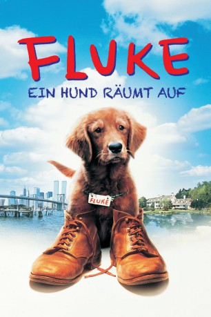

#11041 Fluke
 
 IMDB-Wertung: 6.7 / 10
IMDB-Wertung: 6.7 / 10  Tomatometer: 27
Tomatometer: 27  Metascore: 0
Metascore: 0 
Der Welpe Fluke erblickt das Licht einer erstaunlichen Welt, in der es viel zu entdecken gibt. Wenn er mit seinen Geschwistern rauft, die Gegend erkundet oder sich neben seiner Mutter zu einem Schläfchen zusammenrollt, ist er so zufrieden, wie es ein junger Hund nur sein kann. Doch immer wieder träumt und erlebt er Dinge, die ihn an eine völlig andere Welt erinnern. Und plötzlich wird Fluke klar: Er hat früher schon einmal gelebt - als Mensch! So begibt er sich auf eine außergewöhnliche Suche, bis er schließlich seine menschliche Familie wiederfindet. Die Hundeperspektive vermittelt ihm dabei Einsichten, wie er sie als Mensch niemals gewonnen hätte.
Jahr: 1995
Dauer: 85 Minuten
FSK: 0
Land: USA Studio: MGMTonspuren:
Untertitel:
Auflösung: 1080p (1920x1080) Größe: 5242 MB
Genre: Drama, Fantasy, Familie
Regisseur: Carlo Carlei
Drehbuch: James Herbert, Carlo Carlei, James Carrington
Soundtrack: Carlo Siliotto
Darsteller:
 Samuel L. Jackson als Rumbo
Samuel L. Jackson als Rumbo Matthew Modine als Thomas P. Johnson / Voice of Fluke
Matthew Modine als Thomas P. Johnson / Voice of Fluke Nancy Travis als Carol Johnson
Nancy Travis als Carol Johnson Eric Stoltz als Jeff Newman
Eric Stoltz als Jeff Newman- Max Pomeranc als Brian Johnson
 Ron Perlman als Sylvester
Ron Perlman als Sylvester Jon Polito als Boss
Jon Polito als Boss Bill Cobbs als Bert
Bill Cobbs als Bert- Collin Wilcox Paxton als Bella
- Clarinda Ross als Jane, Tom's Secretary
- Adrian Roberts als Night Guard
 Deborah Hobart als Dogpound Vet
Deborah Hobart als Dogpound Vet- Libby Whittemore als Libby, the Housekeeper
- Mary Ann Hagan als Woman #1
 David Dwyer als Newsstand Man
David Dwyer als Newsstand Man Michael H. Moss als Policeman #1
Michael H. Moss als Policeman #1 Harsh Nayyar als Ahmad (uncredited)
Harsh Nayyar als Ahmad (uncredited) Daniel Newman als School Boy (uncredited)
Daniel Newman als School Boy (uncredited)- Federico Pacifici als Prof. Santini
- Bart Hansard als Day Guard
- Dominique Milton als Schoolboy
- Yolanda King als Woman #2
- Brian Katz als Paramedic #1
- Mary Holloway als Paramedic #2
- Duke Steinemann als Policeman #2
- Georgia Allen als Rose, Cleaning Woman
- John Lawhorn als Farmer with Truck
- Calvin Miller als Skeptical Man
- Duong Bl als Asian Dishwasher
- Deigo La Rosa als Security Guard
- Angie Reno als Delivery Boy
- Sam Gifaldi als Young Fluke
- Marcus Batton als Little Boy (uncredited)
Datei: X:\1995\Fluke (1995, FSK0, 1920x1080).mkv seit 23.04.2019
Festplatte: Gemischt-01+Anime
 Es gibt insgesamt 85 Filme in der Gruppe '1995'
Es gibt insgesamt 85 Filme in der Gruppe '1995'